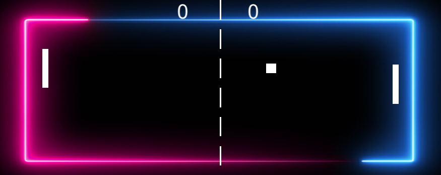
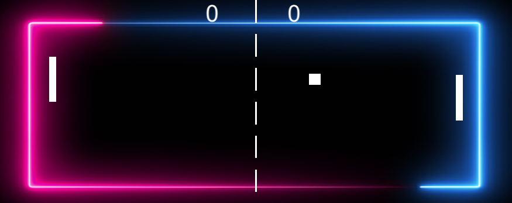

Dit was mijn eerste project ooit gemaakt met code.
Het was een hele leuke ervaring om vanalles te maken en dan uiteindelijk een werkende game te zien.
Het was vooral veel ontdekken want ik had nog nooit met code gewerkt.
Niet elke opdracht in het jaar was even leuk maar alsnog was het een heel leuk en leerzaam jaar.
Bij andere opdrachten had ik ook veel plezier nu ik toch ook een beetje heb gevonden welke richting ik op wil.
Bijvoorbeeld met het maken van de Database en mijn Shine project heb ik ook veel plezier gehad.
Hieronder zie je het start scherm en het in-game scherm van de pong game.
Plezier
 
